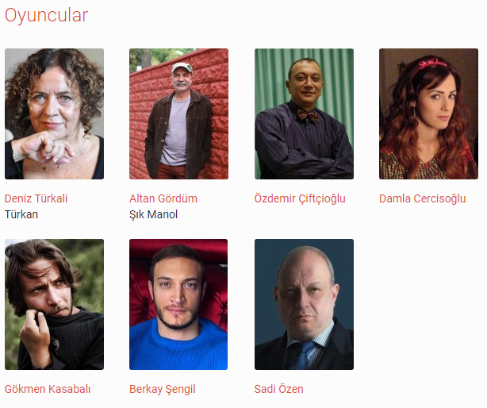

20. yüzyılın başında, İstanbul’da, Çiçekçi Sokağı’nda “faili meçhul” bir cinayet işlenir.
Kosta Kortidis’in yazdığı Çiçekçi Sokağı Cinayeti, işte bu tozlu dosyanın kapağını açar ve çok farklı bir aşk/intikam/ihtiras öyküsünü anlatır.

Tiyatro ve Katılım
Tiyatro ve katılım kısmından tiyatro etkniliklerine katılabilirVe Tiyatro bilgilerine erişebilirsiniz
Sinema ve Katılım
Sinema ve Katılım kısmından Film bilgilerini Film içeriğine Ve Fragmana erişebilirsiniz ve katılabilirsiniz
Sosyal Medya Hesaplarımız'dan bizi takip edebilirsiniz